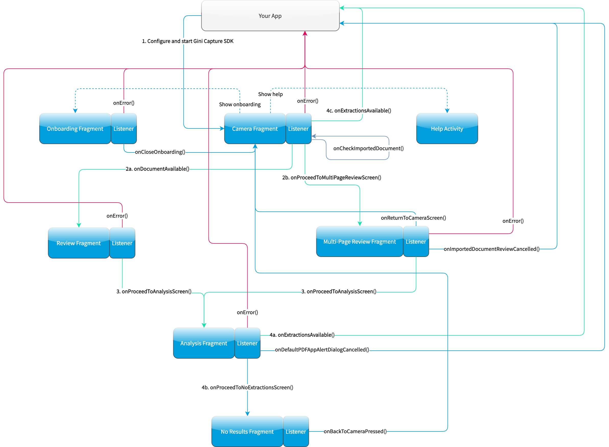

Integration¶
Android Manifest¶
Permissions¶
The Gini Capture SDK uses the camera therefore the camera permission is required:
<manifest xmlns:android="http://schemas.android.com/apk/res/android"
package="...">
<uses-permission android:name="android.permission.CAMERA" />
</manifest>
Note
Make sure you request the camera permission before starting the SDK.
Predictive Back Gesture¶
Starting from Android 13 apps should apply changes to support predictive back gestures. The Gini Capture SDK already contains the necessary changes.
Once your app is ready to support it (by targeting Android 13 and enabling it in the Android Manifest), then no further changes are required from you.
Requirements Check¶
We recommend running our runtime requirements check first before launching the Gini Capture SDK to ensure the device is capable of taking pictures of adequate quality.
Simply run GiniCaptureRequirements.checkRequirements() and inspect the returned RequirementsReport for the result:
Note
On Android 6.0 and later the camera permission is required before checking the requirements.
final RequirementsReport report = GiniCaptureRequirements.checkRequirements(this);
if (!report.isFulfilled()) {
final StringBuilder stringBuilder = new StringBuilder();
report.getRequirementReports().forEach(requirementReport -> {
if (!requirementReport.isFulfilled()) {
stringBuilder.append(requirementReport.getRequirementId());
stringBuilder.append(": ");
stringBuilder.append(requirementReport.getDetails());
stringBuilder.append("\n");
}
});
Toast.makeText(this, "Requirements not fulfilled:\n" + stringBuilder,
Toast.LENGTH_LONG).show();
}
Configuration¶
Configuration and interaction is done using the GiniCapture singleton.
To configure and create a new instance use the GiniCapture.Builder returned by GiniCapture.newInstance(). The
builder creates a new GiniCapture singleton which you will need to destroy later with GiniCapture.getInstance().cleanup().
This will also free up any used resources.
You should call cleanup() after the SDK returned control to your application and your app has sent feedback to the
Gini Bank API and is not using the SDK anymore.
To view all the configuration options see the documentation of GiniCapture.Builder.
Information about the configurable features are available on the Features page.
Tablet Support¶
The Gini Capture SDK can be used on tablets, too. Some UI elements adapt to the larger screen to offer the best user experience for tablet users.
Many tablets with at least 8MP cameras don’t have an LED flash. Therefore we don’t require flash for tablets. For this reason the extraction quality on those tablets might be lower compared to smartphones.
On tablets landscape orientation is also supported (smartphones are portrait only). We advise you to test your integration on tablets in both orientations.
In landscape the camera screen’s UI displays the camera trigger button on the right side of the screen. Users can reach the camera trigger more easily this way. The camera preview along with the document corner guides are shown in landscape to match the device’s orientation.
Other UI elements on all the screens maintain their relative position and the screen layouts are scaled automatically to fit the current orientation.
Networking¶
Communication with the Gini Bank API is not part of the Gini Capture SDK in order to allow you the freedom to use a networking implementation of your own choosing.
Note
You should have received Gini Bank API client credentials from us. Please get in touch with us in case you don’t have them. Without credentials you won’t be able to use the Gini Bank API.
We provide two interfaces which need to be implemented to enable the SDK to analyze documents and retrieve extractions:
GiniCaptureNetworkService- This interface is used to upload, analyze and delete documents. See the reference documentation for details.
GiniCaptureNetworkApi- This interface is used to declare network tasks which should be called by you outside of the Gini Capture SDK (e.g., for sending feedback after the user saw and potentielly corrected the extractions). See the reference documentation for details.
Default Implementation¶
The quickest way to add networking is to use the Gini Capture Network Library.
To use it add the gini-capture-network-lib dependency to your app’s build.gradle:
dependencies {
...
implementation 'net.gini.android:gini-capture-sdk-default-network:2.3.0'
}
For the Gini Capture SDK to be aware of the default implementations create the instances and pass
them to the builder of GiniCapture:
GiniCaptureDefaultNetworkService networkService =
GiniCaptureDefaultNetworkService.builder((Context) this)
.setClientCredentials(myClientId, myClientSecret, myEmailDomain)
.build();
GiniCaptureDefaultNetworkApi networkApi =
GiniCaptureDefaultNetworkApi.builder()
.withGiniCaptureDefaultNetworkService(networkService)
.build();
GiniCapture.newInstance()
.setGiniCaptureNetworkService(networkService)
.setGiniCaptureNetworkApi(networkApi)
.build();
Both default implementations follow the builder pattern. See the documentation of GiniCaptureDefaultNetworkService.Builder and GiniCaptureDefaultNetworkApi.Builder for configuration options.
Retrieve the Analyzed Document¶
You can call GiniCaptureDefaultNetworkService.getAnalyzedGiniApiDocument() after the Gini Capture SDK has returned
extractions to your application. It returns the Gini Bank API document which was created when the user uploaded an
image or pdf for analysis.
When extractions were retrieved without using the Gini Bank API, then it will return null. For example when the
extractions came from an EPS QR Code.
Note
Make sure to call it before calling GiniCaptureDefaultNetworkService.cleanup() or GiniCapture.cleanup().
Otherwise the analyzed document won’t be available anymore.
Custom Implementation¶
You can also provide your own networking by implementing the GiniCaptureNetworkService and the
GiniCaptureNetworkApi interfaces. Pass your instances to the builder of GiniCapture as shown
above.
You may also use the Gini Bank API Library for Android or implement communication with the Gini Bank API yourself.
Sending Feedback¶
Your app should send feedback for the extractions the Gini Bank API delivered. Feedback should be sent only for the extractions the user has seen and accepted (or corrected).
For additional information about feedback see the Gini Bank API documentation.
Default Implementation¶
The example below shows how to correct extractions and send feedback using the default networking implementation:
Note
We also provide a sample test case here to verify that extraction feedback sending works. You may use it along with the example pdf and json files as a starting point to write your own test case.
The sample test case is based on the Bank API documentation’s recommended steps for testing extraction feedback sending.
GiniCaptureDefaultNetworkApi networkApi; // Provided
Map<String, GiniCaptureSpecificExtraction> extractions; // Provided
// Modify the amount to pay extraction's value.
GiniCaptureSpecificExtraction amountToPay = extractions.get("amountToPay");
amountToPay.setValue("31:00");
// You should send feedback only for extractions the user has seen and accepted.
// In this example only the amountToPay was wrong and we can reuse the other extractions.
Map<String, GiniCaptureSpecificExtraction> feedback = new HashMap<String, GiniCaptureSpecificExtraction>();
feedback.put("iban", extractions.get("iban"));
feedback.put("amountToPay", amountToPay);
feedback.put("bic", extractions.get("bic"));
feedback.put("senderName", extractions.get("senderName"));
networkApi.sendFeedback(feedback, new GiniCaptureNetworkCallback<Void, Error>() {
@Override
public void failure(Error error) {
// Handle the error.
}
@Override
public void success(Void result) {
// Feedback sent successfully.
}
@Override
public void cancelled() {
// Handle cancellation.
}
});
Custom Implementation¶
If you use your own networking implementation and directly communicate with the Gini Bank API then see this section in its documentation on how to send feedback.
In case you use the Gini Bank API Library then see this section in its documentation for details.
Note
The Bank API documentation provides recommended steps for testing extraction feedback sending. You may use it along with the example pdf and json files as a starting point to write a test case for verifying that feedback sending works.
Capturing documents¶
The Gini Capture SDK can be used in two ways, either by using the Screen API or the Component API:
- The Screen API provides activities for easy integration that can be customized in a limited way. The screen and configuration design is based on our long-lasting experience with integration in customer apps.
- In the Component API we provide fragments for advanced integration with more freedom for customization.
Screen API¶
This is the easiest way to use the SDK. You only need to:
- Request camera access,
- Configure a new instance of
GiniCapture, - Launch the
CameraActivity, - Handle the result.
The following diagram shows the interaction between your app and the SDK:

Note
Check out the Screen API example app to see how an integration could look like.
The CameraActivity can return with the following result codes:
Activity.RESULT_OK
Document was analyzed and the extractions are available in the
EXTRA_OUT_EXTRACTIONSresult extra. It contains aBundlewith the extraction labels as keys andGiniCaptureSpecificExtractionparcelables as values.Activity.RESULT_CANCELED
User has canceled the Gini Capture SDK.
CameraActivity.RESULT_ERROR
An error occured and the details are available in the
EXTRA_OUT_ERRORresult extra. It contains a parcelable extra of typeGiniCaptureErrordetailing what went wrong.
The following example shows how to launch the Gini Capture SDK using the Screen API and how to handle the results:
void launchGiniCapture() {
// Make sure camera permission has been already granted at this point.
// Check that the device fulfills the requirements.
RequirementsReport report = GiniCaptureRequirements.checkRequirements((Context) this);
if (!report.isFulfilled()) {
handleUnfulfilledRequirements(report);
return;
}
// Instantiate the networking implementations.
GiniCaptureNetworkService networkService = ...
GiniCaptureNetworkApi networkApi = ...
// Cleanup GiniCapture to make sure everything is reset.
GiniCapture.cleanup((Context) this);
// Configure GiniCapture and create a new singleton instance.
GiniCapture.newInstance()
.setGiniCaptureNetworkService(networkService)
.setGiniCaptureNetworkApi(networkApi)
...
.build();
// Launch the CameraActivity and wait for the result.
Intent intent = new Intent(this, CameraActivity.class);
startActivityForResult(intent, GINI_CAPTURE_REQUEST);
}
@Override
protected void onActivityResult(final int requestCode, final int resultCode,
final Intent data) {
super.onActivityResult(requestCode, resultCode, data);
if (requestCode == GINI_CAPTURE_REQUEST) {
switch (resultCode) {
case Activity.RESULT_CANCELED:
break;
case Activity.RESULT_OK:
// Retrieve the extractions
Bundle extractionsBundle = data.getBundleExtra(
CameraActivity.EXTRA_OUT_EXTRACTIONS);
// Retrieve the extractions from the extractionsBundle
Map<String, GiniCaptureSpecificExtraction> extractions = new HashMap<>();
for (String extractionLabel : extractionsBundle.keySet()) {
GiniCaptureSpecificExtraction extraction = extractionsBundle.getParcelable(extractionLabel);
extractions.put(extractionLabel, extraction);
}
handleExtractions(extractions);
break;
case CameraActivity.RESULT_ERROR:
// Something went wrong, retrieve and handle the error
final GiniCaptureError error = data.getParcelableExtra(
CameraActivity.EXTRA_OUT_ERROR);
if (error != null) {
handleError(error);
}
break;
}
}
}
Component API¶
This is the more complicated way of using the SDK. The advantage is that it is based on fragments and you have full control over how these are shown in your UI.
Note
Check out the Component API example app to see how an integration could look like.
There is also one activity for showing the help screen. This is not a fragment in order to avoid overcomplicating the Component API integration.
The fragments extend androidx.fragment.app.Fragment and to make it clear, that they are not native fragments we
suffix them with Compat.
Each fragment has a createInstance() factory method. Some require arguments and those will have to be passed to this
factory method.
Fragments also have a listener through which they inform you about events and which next fragment should be shown. The result will be also returned through a listener method. The listener can be set either explicitly on the fragment or implicitly by making the host activity implement the listener interface.
The following diagram shows the possible flows through the SDK based on the listener method invocations. For brevity each fragment’s listener is shown next to it. In your integration you will provide the listener implementations and handle the listener method calls. You should navigate to the appropriate fragment based on this diagram:
{kind=link}
CameraFragmentCompat¶
This is the entry point and should be launched first. These are the steps you should follow to start the
CameraFragmentCompat:
- Request camera access,
- Configure a new instance of
GiniCapture, - Create a new instance of
CameraFragmentCompatusing it’screateInstancefactory method, - Provide a listener either using
setListener()or making the host activity implementCameraFragmentListener, - Create a
GiniCaptureCoordinatorand set a listener to know when to show theOnboardingFragmentCompat, - Show the
CameraFragmentCompatand handle listener method invocations.
It shows a camera preview with document corner guides and tap-to-focus functionality, a trigger button and an optional flash on/off button, import button and images stack when capturing multiple pages.
A CameraFragmentListener instance must be available before it is attached to an activity.
Failing to do so will throw an exception. The listener instance can be provided either implicitly by making the host
activity implement the CameraFragmentListener interface or explicitly by setting the listener using setListener().
See the reference documentation of this fragment’s public interface and it’s listener for more details.
GiniCaptureCoordinator¶
This coordinator helps to implement the default behavior of the SDK. For example it helps to show the onboarding screen at first launch.
See the reference documentation for details.
OnboardingFragmentCompat¶
This fragment shows the onboarding screen. You can use the GiniCaptureCoordinator to know when to show it. You can
also implement a button to allow users to view it on demand.
It displays important advice for correctly photographing a document.
The default way of showing this fragment is as an overlay above the camera screen with a semi-transparent background.
By default an empty last page is added to enable the revealing of the camera preview before this fragment is dismissed.
You can disable this by using the appropriate createInstance...() factory method.
If you would like to display a different number of pages, you can use the factory methods and provide a list of
OnboardingPage objects.
An OnboardingFragmentListener instance must be available before the fragment is attached to an
activity. Failing to do so will throw an exception. The listener instance can be provided either implicitly by making
the host activity implement the OnboardingFragmentListener interface or explicitly by setting the listener using
setListener().
See the reference documentation, public interface and listener for details.
HelpActivity¶
This activity shows the help screen. The content of this screen depends on how GiniCapture was configured. You can
also add custom screens during configuration.
You need to add a button to your UI to launch the HelpActivity. It requires no extras and can be launched with a
simple intent.
See the reference documentation for details.
ReviewFragmentCompat¶
This fragment shows the single page document review screen. This should be only used if multi-page document scanning was not enabled.
It displays the photographed or imported image and allows the user to review it by checking the sharpness, quality and orientation of the image. The user can correct the orientation by rotating the image.
A ReviewFragmentListener instance must be available before the ReviewFragmentCompat is attached to an activity.
Failing to do so will throw an exception. The listener instance can be provided either implicitly by making the host
activity implement the ReviewFragmentListener interface or explicitly by setting the listener using setListener().
See the reference documentation, public interface and listener for details.
MultiPageReviewFragment¶
This fragment shows the multi-page document review screen. This should be only used if multi-page document scanning was enabled.
It displays the photographed or imported images and allows the user to review them by checking the order, sharpness, quality and orientation of the images. The user can correct the order by dragging the thumbnails of the images and can also correct the orientation by rotating the images.
A MultiPageReviewFragmentListener instance must be available before it is attached to
an activity. Failing to do so will throw an exception. The listener instance can be provided either implicitly by making
the host activity implement the MultiPageReviewFragmentListener interface or explicitly by setting the listener using
setListener().
See the reference documentation, public interface and listener for details.
AnalysisFragmentCompat¶
This fragment shows the analysis screen. It displays the captured or imported document and an activity indicator while the document is being analyzed by the Gini Bank API. For PDF documents the first page is shown along with the PDF’s filename and number of pages above the page.
An AnalysisFragmentListener instance must be available before it is attached to an
activity. Failing to do so will throw an exception. The listener instance can be provided either implicitly by making
the host activity implement the AnalysisFragmentListener interface or explicitly by setting the listener using setListener().
See the reference documentation, public interface and listener for details.
NoResultsFragmentCompat¶
This fragment shows the no results screen. It displays hints that inform the user how to best take pictures of documents and also shows a button to return to the camera screen to retry the document capture.
Your Activity must implement the NoResultsFragmentListener interface to receive events from the fragment. Failing to
do so will throw an exception.
See the reference documentation and listener for details.